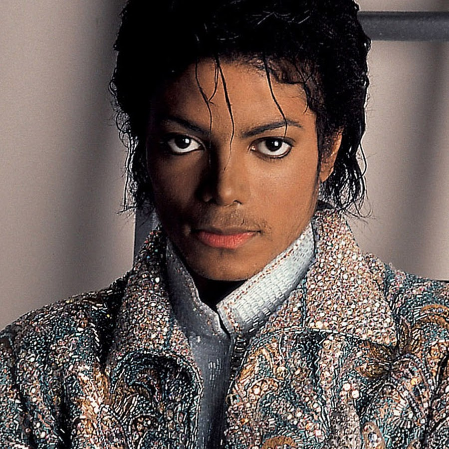

Kindheit und die Jacksons
Michael Jackson kam 1958 als achtes von insgesamt zehn Kindern in Gary (Indiana) im Mittleren Westen zur Welt. Sein Vater Joseph Jackson (1928–2018) war Kranführer, die Mutter Katherine Jackson (* 1930) Verkäuferin. Michaels Geschwister sind:

| Name | Geburtsjahr |
|---|---|
| Rebbie | 1950 |
| Jackie | 1951 |
| Tito | 1953 |
| Jermaine | 1954 |
| La Toya | 1956 |
| Marlon | 1957 |
| Brandon | 1957 |
| Randy | 1961 |
| Janet | 1966 |
| JohVonnie Jackson | 1974 |
Joseph Jackson sorgte von frühester Kindheit an für die musikalische Förderung seiner Kinder. Er trieb sie immer wieder zu Höchstleistungen und die Teilnahme zu verschiedenen Talentwettbewerben an. Michael Jackson beschrieb diese Beziehung später als hoch problematisch: Der Vater habe ihm mit dem Drill sowie seinen physischen und psychischen Übergriffen die Kindheit geraubt. 1964 gründete der Vater das Kindertrio The Jackson Brothers, aus dem 1966 die Band The Jackson Five hervorging. Die Band hatte große Erfolge und bestand aus den fünf Brüdern Jackie, Tito, Jermaine, Marlon und Michael Jackson als Hauptsänger. Von den Jackson-Geschwistern waren nach Auflösung der The Jackson Five außer Michael noch Janet, La Toya und Jermaine als Solokünstler erfolgreich.